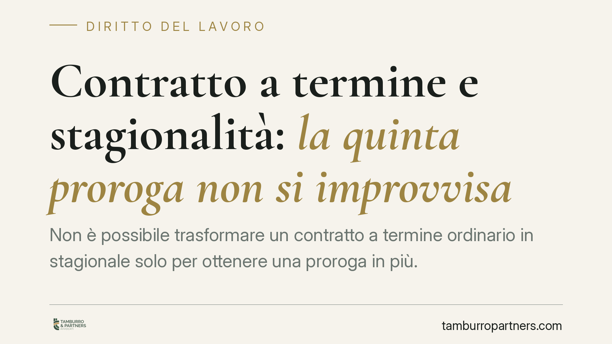

Contratto a termine e stagionalità: la quinta proroga non si improvvisa
Non è possibile trasformare un contratto a termine ordinario in stagionale solo per ottenere una proroga in più. La stagionalità è una qualità oggettiva dell'attività, non un'etichetta apposta all'occorrenza. Chi forza questa qualificazione rischia la conversione a tempo indeterminato e l'attenzione degli organi ispettivi. Analizziamo il quadro normativo e gli accorgimenti operativi per le imprese.

Il problema pratico
Un datore di lavoro ha stipulato un contratto a tempo determinato ordinario, lo ha prorogato quattro volte e, per aggiungere una quinta proroga, prova a riqualificare il rapporto come "stagionale", beneficiando così dell'esclusione dal tetto numerico. La domanda è se questa operazione regga.
La risposta della giurisprudenza di legittimità è negativa. La stagionalità deve sussistere fin dall'origine come carattere oggettivo dell'attività svolta. Non può essere costruita a posteriori per guadagnare margini di flessibilità che la legge non concede al contratto a termine comune.
Inquadramento normativo
Occorre tenere distinti due piani che spesso vengono confusi.
Il primo riguarda la durata massima. L'art. 19 del D.Lgs. 81/2015 fissa in ventiquattro mesi il tetto complessivo del rapporto a tempo determinato tra le stesse parti per mansioni di pari livello e categoria, e disciplina le condizioni (cosiddette causali) richieste oltre i dodici mesi.
Il secondo riguarda il numero di proroghe. L'art. 21, comma 1, del medesimo decreto stabilisce che il contratto può essere prorogato liberamente nei primi dodici mesi e, successivamente, solo in presenza delle condizioni di legge; in ogni caso le proroghe non possono superare il numero di quattro nell'arco dei ventiquattro mesi. Se si supera tale limite, il contratto si considera a tempo indeterminato dalla data della proroga eccedente, cioè dalla quinta.
La deroga per i contratti stagionali è prevista dallo stesso art. 21, comma 2: a questi rapporti non si applicano né il limite numerico delle proroghe né alcune delle altre restrizioni. Ma la deroga presuppone che il contratto sia effettivamente stagionale.
Le attività stagionali sono individuate dal D.P.R. 1525/1963 e, in forza dell'art. 21, comma 2, del D.Lgs. 81/2015, dalle ipotesi definite dalla contrattazione collettiva (nonché dagli eventuali decreti ministeriali attuativi). Il D.P.R. del 1963 resta un riferimento, ma va letto in combinazione con le previsioni dei CCNL applicabili: non è più l'unica fonte.
Stagionalità: qualità oggettiva, non etichetta
Il punto decisivo è questo: la stagionalità è una caratteristica dell'attività, legata a cicli produttivi connessi a ritmi naturali, climatici o di mercato ricorrenti e circoscritti nel tempo. È una qualità che o c'è dall'inizio o non c'è.
Non ogni attività che si ripete nel tempo è stagionale. Una maggiore richiesta ricorrente, una campagna commerciale periodica o un picco prevedibile non bastano a integrare la nozione. Serve che l'attività rientri nelle ipotesi tipizzate dalle fonti sopra richiamate.
Di conseguenza, un contratto nato come ordinario non può essere riqualificato in corso di rapporto per accedere alla deroga sulle proroghe. La qualificazione va cristallizzata al momento della stipula, con una causale coerente con la reale natura dell'attività.
Il doppio rischio
Chi forza la qualificazione si espone a due conseguenze distinte.
La prima è la riqualificazione a tempo indeterminato: se la quinta proroga non trova copertura in una stagionalità effettiva, il contratto si consolida come stabile, con tutte le tutele conseguenti in caso di recesso.
La seconda è l'attenzione degli organi di vigilanza. L'Ispettorato Nazionale del Lavoro può contestare l'uso improprio della causale stagionale, con i relativi profili sanzionatori e contributivi. Una qualificazione non supportata dai fatti è facilmente ricostruibile in sede ispettiva.
Cosa fare in concreto
- Verificare la causale all'origine. Stabilire fin dalla stipula se l'attività rientra tra le ipotesi stagionali del D.P.R. 1525/1963 o del CCNL applicabile, e indicarla con precisione nel contratto.
- Non riqualificare in corso di rapporto. Evitare di convertire un contratto a termine ordinario in stagionale durante l'esecuzione: la natura va fissata ex ante, non adattata alle esigenze sopravvenute.
- Monitorare proroghe e durata separatamente. Tenere traccia sia del numero di proroghe (tetto di quattro ex art. 21) sia della durata complessiva (ventiquattro mesi ex art. 19), che rispondono a regole diverse.
- Documentare la natura dell'attività. Conservare elementi oggettivi (cicli produttivi, calendari, evidenze commerciali o contrattuali) idonei a dimostrare la stagionalità in caso di contestazione.
- Allineare modelli contrattuali e CCNL. È opportuna una revisione dei modelli contrattuali per verificarne la coerenza con le ipotesi di stagionalità previste dal contratto collettivo di riferimento.
Disclaimer
Contributo informativo a cura di Tamburro & Partners - Avv. Giuseppe Tamburro. Non costituisce parere legale.
Ogni storia di lavoro ha i suoi tempi.
Se gestisci HR e vuoi un confronto su contenzioso, ispezioni o licenziamenti, scrivi allo studio. Ti rispondiamo entro un giorno lavorativo.